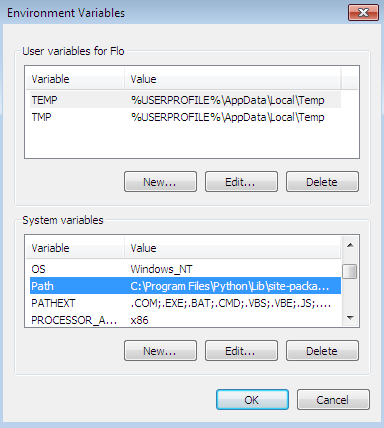

Windows Installation
Note to users with a partitioned drive
Optional: Install Autodesk Maya 2015
Cadnano does not need Maya to run. However, it is currently required if you would would like to see a 3D model of your structure, which many people find helful. In recent years, Autodesk Maya has made 3-year licenses available to individuals with a .edu email address.
- Create an academic account at www.autodesk.com/education/. After you activate your account by clicking on the link in the email, fill in your preferences.
- Download the free version of Maya 2015 for your operating system from here.
- Install Maya 2015.
Ensure Python is installed
Open a command line window and type
python
If the python console is launched, you have python installed and can move on to installing Cadnano. Otherwise you need to install Python. We recommend version 2.7.2 as of this writing, but you may have success with newer versions. Note that this will probably NOT work with python3.
- Download and install Python from here.
- Add the Python folder to the PATH environment variable.
- Open the start menu and right click on Computer. The Control Panel's System dialog should launch:
- Click Advanced System Settings, on the left. The System Properties dialog opens, on the Advanced tab:

- Click the "Environment Variables..." button. The Environment Variables dialog opens:
 - Select the Path system variable and click "Edit...". The dialog to update the path is launched:
- Add the python installation path, in our case "C:\Program Files\Python" to the Variable value, and click OK.
- Click OK to close the Environment Variables and System Preferences dialog boxes.
- Open the start menu and right click on Computer. The Control Panel's System dialog should launch:
{kind=link}
{kind=link}
{kind=link}
Install cadnano
{kind=link}
Troubleshooting
A few users have encountered a problem where the Maya configuration files are not updated by the installer. The following additional steps may be used to complete the installation.
Try Rebooting
If the installer requests a reboot, please reboot before running Maya.
Make sure the versions match
The 32-bit installer will not work for 64-bit Maya, and vice versa. You can determine the version of Maya by checking the launch icon, or the title bar in Maya when it is running. Make sure the installer matches the Maya version (32-bit or 64-bit).
Import Error: No module named sip
If you are trying to use Maya 2013 and are getting this error, one workaround is to download and manually install Maya 2013 PyQt x64 from Nathan Horne's website. (p.s. — Nathan's blog is amazingly useful - many great examples for how to get python/pyqt code to run inside Maya).
Set the location of the cadnano plugin manually
- Configure CADNANO_PATH
Win7/Vista: Start Menu > Control Panel > System & Security > System > Advanced System Settings
XP: Right click on My Computer > Properties > Advanced tab Environment Variables > Under System variables click New...Variable name: CADNANO_PATH
Variable value:<cadnano installation path> (default: C:\Program Files (x86)\CADnano2\) -
Update Maya Preferences
Launch Maya once to generate the preferences files, then close Maya.Win7/Vista: Start Menu > Documents
XP: Start Menu > Documents > My Documents
maya > 2012 (or 2012-x64)
Right click on Maya.env > Open With... > Double click on Other Programs > Notepad > OK
Add the following:MAYA_PLUG_IN_PATH=<cadnano installation path> (default: C:\Program Files (x86)\CADnano2)
-
Load the plugin in Maya
Launch Maya
Window > Settings/Preferences > Plug-in Manager
Find spCadNano.py and toggle on "Loaded" and "AutoLoad"
You should now see the cadnano button at the top right corner
The Maya interface does not load properly or is missing elements
This probably means that the Maya preferences got corrupted, possibly by a bug in cadnano.
In order to restore the preferences to their defaults, simply delete (or rename) the "prefs" folder.